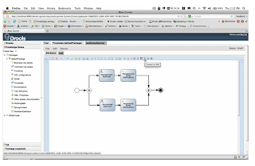

Develop complex jBPM processes all in Guvnor? Yes, you can!
(click on image to view the video) 
The above video showcasts some of the new jBPM web-based tooling support added to Drools Guvnor and the Oryx Designer used by jBPM to allow both business users and developers to create complex BPMN2.0 processes without depending on the traditional development environments.
The new tooling support includes:
* jBPM Custom-workitem definition editor in Guvnor.
* Oryx Designer ability to store processes to PNG and PDF formats.
* Ability to view the BPMN2.0 source of the process in Guvnor.
* Oryx Designer ability to generate process task forms which are fully-executable in jBPM Console. Templates also include form validation support out-of-the-box.
* Tight integration between Oryx Designer and Drools Guvnor.
In this video we create a simple medicine checkout procedure process which used both human tasks and a custom email notification workitem all in Guvnor, then execute it inside jBPM Console.